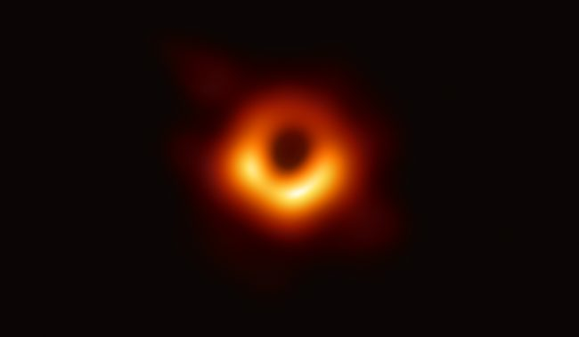

Where to begin
Annual and unrestricted giving
Unrestricted gifts are the ones SAO's leadership can put to work immediately, wherever the need is sharpest in a given year. They are, gift for gift, the most useful support the Observatory receives.
Federal appropriations and grants cover much of SAO's core science, but they are slow, restricted, and awarded against work that is already proven. Philanthropy fills the gaps: the pilot study that earns the grant, the travel that gets a student to a telescope, the repair that keeps an instrument on sky.
A gift of any size can be made once or set to recur. Unrestricted gifts go to the SAO Director's discretionary fund. To direct your support to a specific area — instrumentation, education, or a particular mission or observatory — contact the Advancement team.

Membership
SNAC — the Smithsonian National Astronomy Council
SNAC brings together astronomy enthusiasts from across the country to strengthen SAO's work: advancing science, opening STEM pathways, exploring distant worlds, and decoding the origins of galaxies, stars, and planets.
Members learn about discoveries before the general public and hear directly from the astronomers making them, with invitation-only events and travel including eclipse viewings, rocket launches, and visits to telescope sites around the world.
-
SNAC Club
$1,500
- Quarterly virtual science forums with SAO scientists and engineers
- SNAC Bytes — exclusive research spotlights throughout the year
- Quarterly newsletter, Stellar Insights
- Library of past program recordings
- SNAC welcome gift
-
SNAC Circle
$5,000
Everything in Club, plus
- Invitation to the annual SNAC Science Summit
- Invitations to exclusive events across the country
- Recognition in the Smithsonian Annual Report
-
SNAC Champions
$10,000
Everything in Club and Circle, plus
- Behind-the-scenes access at SAO and partner facilities
- Access to SAO telescopes in Hawaiʻi, Arizona, and Massachusetts
- International travel with SAO's director and leadership
Membership year and renewal date, the tax-deductible portion of each level, and whether membership can be paid in installments — [CLICK TO CONFIRM]
Questions about membership? Contact Becca Kim, SNAC Program Director, or email SAO_Advancement@si.edu.
Leadership
Major and leadership gifts
At the leadership level, a gift becomes a specific thing in the world: an instrument, a fellowship, a program that runs for years because someone decided it should exist.
Named funds and endowments
An endowed fund carries a donor's or family's name in perpetuity and pays out annually to the purpose it was created for — a research area, a facility, a public program.
Fellowships and early-career support
Named fellowships for graduate students and postdoctoral researchers, funding the first independent years of a scientific career.
Instrumentation and missions
Support for telescopes, detectors, and instruments — including SAO's contributions to the Giant Magellan Telescope, the Black Hole Explorer mission, and the next-generation Event Horizon Telescope.
Planned and legacy giving
Bequests, charitable trusts, and beneficiary designations that support the Observatory beyond a lifetime. Contact SAO_Advancement@si.edu
Who to talk to
-
Sarah Nielsen
Assistant Director for Individual Giving
Advancement Liaison for SAO's major radio astronomy initiatives, including the Black Hole Explorer mission and the next-generation Event Horizon Telescope.
Email: sarah.nielsen@sao.si.edu
-
Emma Hammack
National Outreach Manager
Advancement Liaison for SAO's national outreach and discovery.
Email: emma.hammack@sao.si.edu
-
Grace Noah
Director of Advancement
Oversees major gifts, donor relations, events, and communications at SAO.
Email: grace.noah@sao.si.edu>
In honor · In memory
Tribute and memorial gifts
A gift can honor someone living — a birthday, a retirement, a teacher who started it all — or remember someone who is gone. It is a lasting way to mark a love of astronomy.
- Choose the fundAny area of SAO's work can receive a tribute gift — unrestricted support, a specific observatory or mission, education programs, or an existing named fund.
- Tell us who it honorsGive the person's full name as it should appear in the acknowledgment, and note whether the gift is in honor of or in memory of.
- Add a notificationProvide the name and address of the person who should be told about the gift. The amount is never disclosed unless you ask.
- Receive your acknowledgmentYou receive a receipt for tax purposes; the person you named receives a separate letter.
Whether the online form carries honor/memory fields, or whether tribute gifts are routed through Donor Relations by email — SAO_Advancement@si.edu
-
Emma Allen
Donor Relations & Events Manager
Leads the events and engagement that connect donors to the Observatory's mission.
Email: emma.allen@sao.si.edu